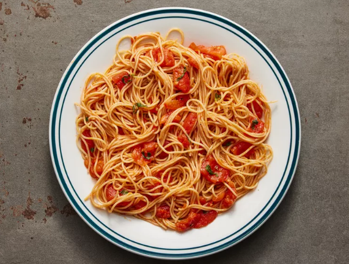

Pasta Recipe

Description
This is a simple and easy to make tomato pasta recipe. Have this for a meal in less than an hour!
Ingredients
- Barilla No.4 Spaghetti
- Olive Oil
- Garlic
- Button mushrooms
- Salt to taste
- Parmesan Cheese
- Barilla Tomato Sauce
Steps
- Cook Barilla No.4 Spaghetti till aldante
- Drain and keep 1 cup of pasta water
- Heat olive oil, fry garlic and sliced button mushrooms
- Once garlic is golden brown, add Barilla Tomato Sauce
- Add pasta water and let boil for 3 minutes
- Salt to taste and add Barilla No.4 Spaghetti into sauce
- Serve with Parmesan Cheese